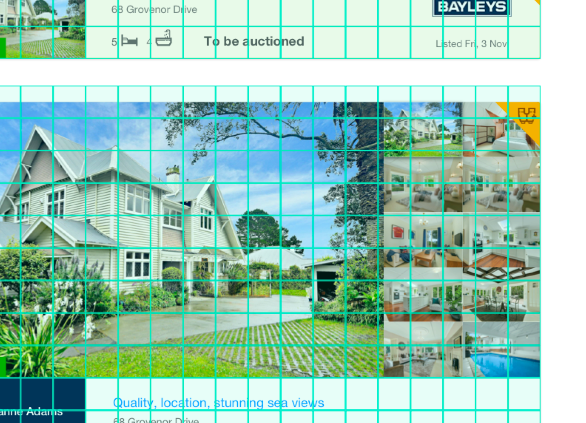
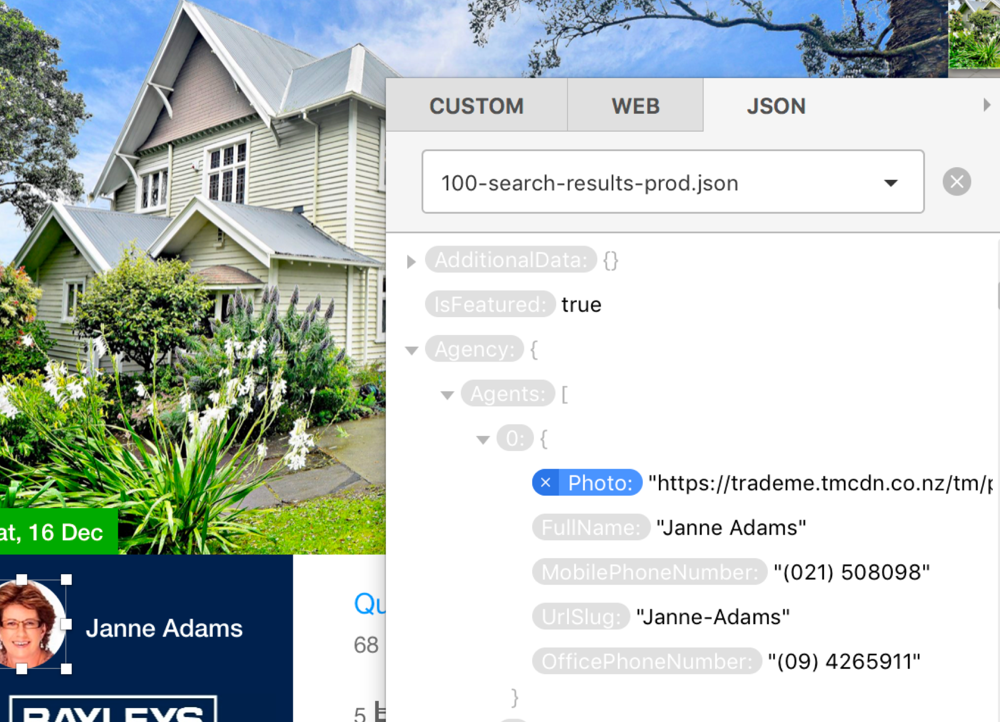
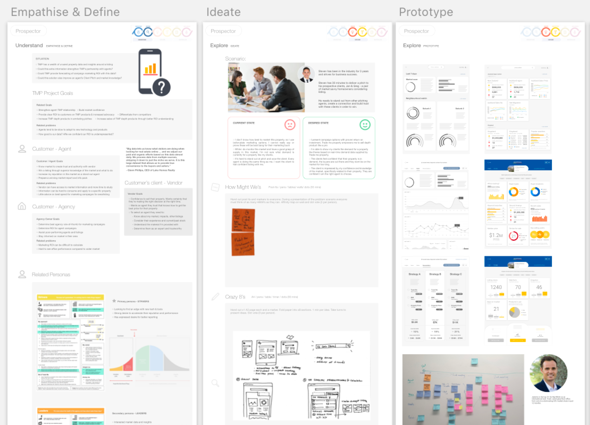
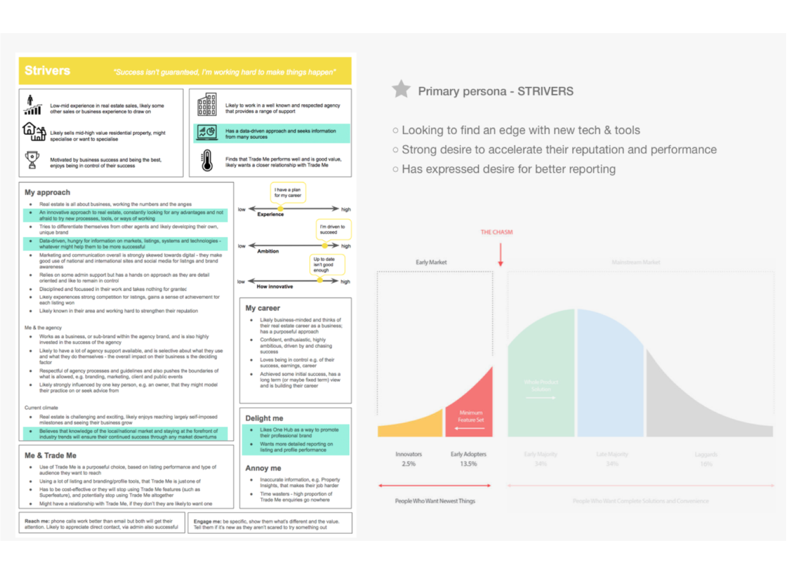
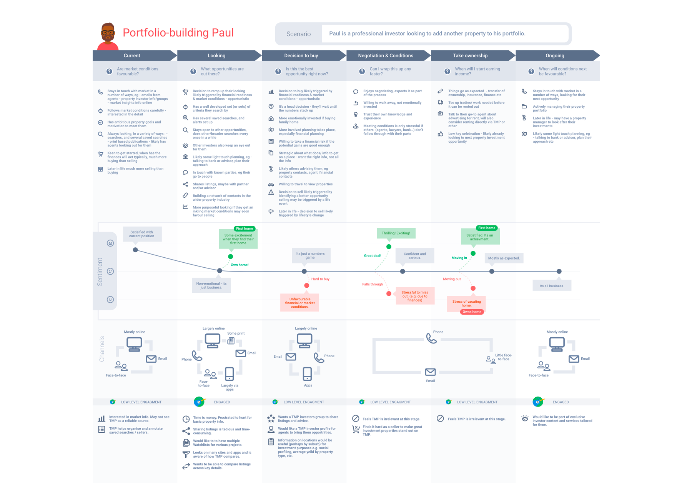
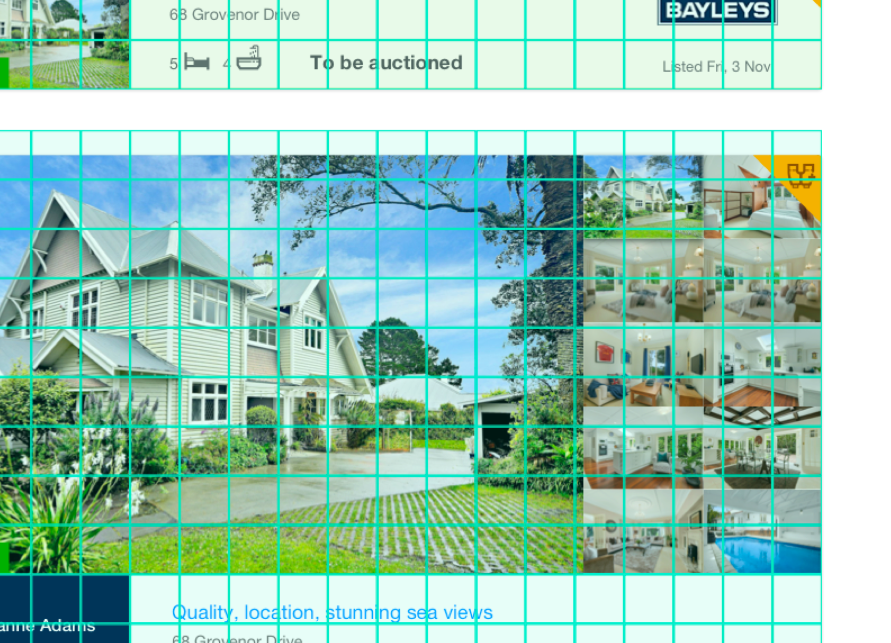
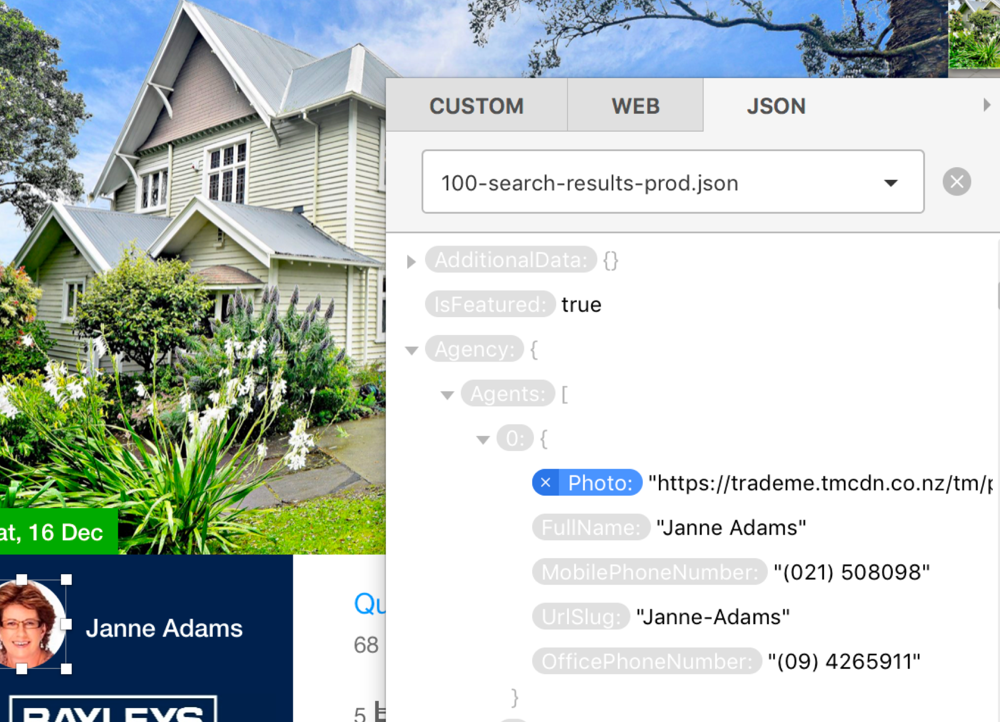
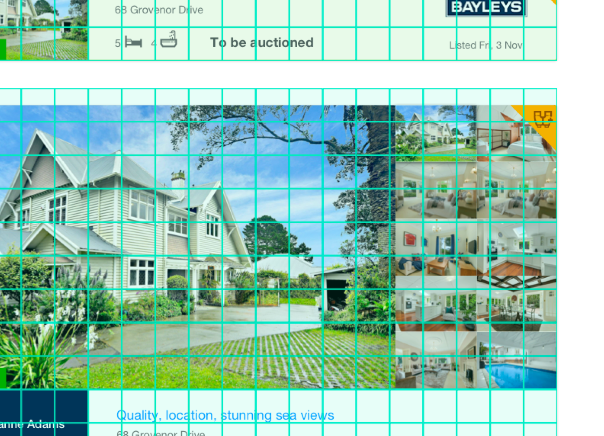
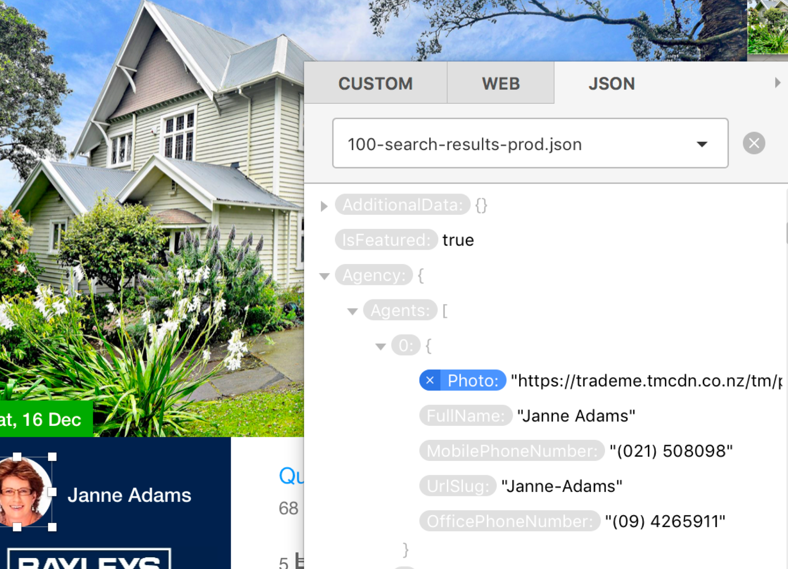

The challenge was to launch MVP for a new online accounting practice application.
Team setup
Two alliances made up of three tribes each, each with three squads. Each squad contains a UXer, Product Manager, Dev lead, BA, QA and developers. In addition Product Marketers, Sales and Product Delivery Managers are Brough in as cross-functional teams. As Senior UX, I led the Foundation tribe, consisting of three squads: Contacts, SHELL and Access Management.
Discovery
Each squad’s mission required In-depth interviews to validate the problem and Competitor Analysis of existing solutions in marketplace.
Design
Three-day workshops held in Sydney and Auckland went through a series cross-functional design workshops through stage-setting, communicating research / lightening talks, storyboarding the problem with personas, journey mapping current user experience, affinity mapping with stickies, mapping the ‘ideal’ user journey, crazy 8s for possible UI / flow ideas
Prototyping / Wireframing
Most voted UI concepts and flows were then created in Sketch, automatically synced to an Invision prototype shared with squad and cross-functional team. The team was encouraged to view and leave comments.
User Testing
Testing specific flows with rounds of user testing 5-10 participants (account wants and bookkeepers). These were recorded, shared with the team via youtube and results made into infographics / workshop personas updated.
Hifi UI / Visual Design
Paring with our front-end dev, I strongly used our existing patterns from Feelix (our pattern/component library) the tweaked flows in Sketch/Invision are made pixel perfect and on-brand.
Implementation
Guidance was given where needed to implement existing react components or build new ones. Analysis and event tracking set up in Full Story and Segment to further improve workflows
A responsive desktop solution from MYOB that required coordinating with 10+ agile teams across Melbourne, Sydney and Auckland to provide the foundations for this new offering for Accountants, Bookkeepers and Tax Agents.
Client:
MYOB
Date:
Jan 2017
Service:
Discovery research, personas, journey mapping, workshop facilitation, react pattern library management, low-fi prototyping and validation, IA analysis.
MYOB PayGlobal
Project Overview
An existing enterprise desktop product with an online self-service component. The project was to extend this online portal to include a rostering application for staff and shift managers.
Team setup
Two development teams based in Christchurch. Key decisions made between UX (me, based in Auckland) and Product Manager.
Discovery
Competition research and thorough onsite study of two existing customers using various other solutions to meet their needs
Design
Research was turned into journey maps for two personas, a restaurant shift manager (operating across three franchises) and a supermarket manager looking after 100+ scheduled employees. A number of workshops were facilitated for teams to provide insight into building a new solution using a Google Design Sprint framework (Unpack > Sketch > Decide > Prototype > Test).
Prototyping / Wireframing
Initial key flows were workshopped in spikes based on the idealised journey map for each persona. Wireframes drawn on A3 paper and discussed as a team.
User Testing
Initial testing focused on the two interviewed clients, talking through flow and ideas with shift managers to validate solution.
Hifi UI / Visual Design
More competitor analysis and discussion with visual designers in Melbourne to find best on-brand visual output. Made more complex by requirement that clients 2could apply their own branding (logo and menu highlighting of a specified colour.
Implementation
Daily standups (remote via Skype) with dev teams to go through UI, interactions and provide guidance.
MYOB's largest product offering required a significant redesign effort to its self-service portal, including a new mobile-friendly, web-based rostering application.
As design lead, the role required coordinating between agile development teams based in Auckland and Christchurch offices, and high profile companies throughout the country.
Service:
UI, discovery research (in-depth interviews), rapid prototyping, usability testing, journey mapping, storyboarding, persona development, workshop facilitation.
MYOB Advanced
Project Overview
Cloud-based ERP product to be redesigned and launched across NZ and Australia.
Team setup
Central UX team of which I was leading, bringing designers from Moscow, Norway, Sweden, France, New Zealand and Australia together for research and organising core UX decisions.
Discovery
Two large research projects were conducted. The first was a three-month audit of the existing product with several rounds of user testing key workflows. This resulted in an exhaustive list of UX issues prioritised by frequency and severity. The second piece of research involved tackling to topmost UX issue, being navigation (IA) and terminology, with some work on disjointed workflows.
Design
Choosing the Sales Administrator persona as a starting point, a journey map of three core workflows were created from user testing and broken down into steps. An ‘aspirational’ version was then mapped out and workshopped with the group to discover ways to reduce screen changes, clicks, form fields and other time on task issues.
Prototyping / Wireframing
Prototyping of changes was completed with dev in-product using feature switching and releasing improvements to selected beta testing clients.
Visual Design
Significant changes were made to the existing CSS to make the product on-brand. A number of UI variations were produced for management, the decisions of which helped form the basis for our pattern library, attempting to bring the solution to a consistent visual language with our SME products, despite being build a very different codebase
Implementation
Improvements were slowly rolled out via feature-switching and our backend customer feedback solution ‘Lean Engage’ was monitored to detect any issues or changes in NPS.
This cloud-based ERP product required a multi-year UX strategy. A "red routes" approach was implemented to understand key tasks across multiple user groups. These tasks were studied in user locations and recorded, the workflows broken down, storyboarded and mapped. The result was a more efficient, intuitive user experience.
Spec work for ASB, looking at possible new redesigns of their desktop self-service portal, Fastnet.
Discovery
Competitor analysis. Look at cutting-edge UI design for desktop.
Design
Mockups in Adobe Illustrator borrowing heavily of Google’s UI design principles (pre-material). Emphasis on providing light, airy visuals with crisp, flat UI elements and a strict colour palette.
Some early conceptual work looking at how to rethink ASB's desktop UI. Using a google look (pre-material) I tried to provide a clean, responsive look that conveyed the same information for a more competitive, modern feel.
Client:
MYOB
Wintec
Project Overview
A replacement of the existing php website to a responsive, mobile-friendly solution with the key aim of supporting the biannual student recruitment funnel.
Team setup
A cross-functional team of digital marketing, customer experience, IT department and a software engineering agency.
Discovery
Competitor research on other polytechnic across NZ and Australia. Personas and storyboards developed around the student intake journey. Two videos were made of these journeys to share with the exec team
Design
Series of workshops to define the ideal flow and determine best way to monitor performance (using google analytics event-tracking). New visual identity developed in-house based on advertising and current brochures to create a consistent feel for the website.
Prototyping / Wireframing
A mobile-first approach was agreed on, starting with iPhone mockups and moving onto tablet, then desktop. Flows expected to be mobile-heavy such as checking out courses and even applying to enrol were carefully prototyped and tested.
User Testing
Early mocks were made in Illustrator and printed out, testing with students using an ‘opt-in’ reward program to validate ideas.
Hifi UI / Visual Design
Key landing pages were mocked up in Illustrator at desktop, tablet and smartphone sizes.
Implementation
Colours, sizing, fonts and behaviour were handed over to the development agency, working closely to tweak the build as it progressed.
WINTEC is one of New Zealand’s largest leading Institutes of Technology in New Zealand, providing vocational education for over 20,000 students every year.
Working alongside a traditional marketing and IT department, my role was a unique one, providing customer experience (CX) direction across the organisation and managing specific UX projects such as designing an iOS and Android app for recruitment purposes (now defunct) and a complete redesign of the website.
Create a new set of listings for Trade Me Property that provides new value for the agents, vendors, consumers and key new revenue stream for the business. Specifically to design a new “premium tier” offering for property sellers to appear in search results.
Results
On release, the new offering went on to smash expectations fast becoming a huge success for the business.
Team setup
Core squad: Product Manager, Product Owner (BA), product designer (me), two QAs and four developers. Additional: sales, marketing delivery and central squads.
Discovery
A thorough read through of existing primary research from our CX team around our primary persona customer needs, pain points, archetypical processes and customer journeys. Followed by an environmental scan of successful property portals. An audit of current usability vs competitiors.
Design
Two ideation workshops centered around two common user scenarios. How-Might-We’s and Crazy Eights acitivities were used alongside lightening talks covering research and business objectives. Participants were a combination of product and sales.
Prototyping / Wireframing
Paper sketch combining most popular ideas from ideation workshops. Then basic greyscale mockup in Sketch+Invision, developed further into a functional prototype for testing.
User Testing
Serveral core flows tested with three sets of property hunters. Comments and observations recorded over three days. Research turned into slide deck for PM and management.
Hifi UI / Visual Design
Refining of prototype based on testing to final design ready for implementation. Sketch used with respect to existing component library and liasing with front-end development.
Implementation
Working with squad to provide specifications, assets and tweaking CSS.


Trade Me is one of the most popular websites in New Zealand with 800,000 kiwis visiting daily (from a population of 4 million).
The Trade Me ‘Green’ app is the #1 real estate app for both Android and iOS. The project was to find the best way to increase our ratings and position.
Results
The Android prompt was released first and double the number of ratings, moving the app from #3 to #1 in the lifestyle category for New Zealand. The iOS prompt had huge engagement and increased the rating from 3.1 to 4.3 stars within 48 hours
Team setup
Core squads: Mobile Product Manager, Product Owner (BA), product designer (me), two QAs and two Android and two iOS developers.
Discovery
After preliminary secondary research, decided that a rating prompt would be the most effective first step. Combined research from other business units regarding how to approach this as a brand. Decided to follow good UX guidelines: Don’t interrupt the user during a task. Don’t interrupt on app load. Try to show after positive interaction. BE ETHICAL. ie. aim to generate the most ACCURATE rating, not game the system.
Design
Ideation workshop with development to discover what technology was available. Discussed a number options. Settled on using Google’s firebase to identify ‘highly engaged’ users based on agreed criteria. By prompting only en gaged users we could be confident that only users whop knew the app well would be in a position to rate it fairly.
Prototyping / Wireframing
The iOS prompt was a handled by the system and didn’t need any interface design. However, journey maps showing the user’s key flows were used to visualise where the prompt would show in context of a property search. The Android prompt went through another ideation workshop resulting in five options.
User Testing
Android prompt messaging and imagery were tested with six highly engaged app users to determine the best option.
Implementation
Prepared prompt messaging and iconography for development.
Trade Me is one of the most popular websites in New Zealand with 800,000 kiwis visiting daily (from a population of 4 million).
Trade Me has perhaps the most amount of user data in New Zealand on kiwis. Our objective was to discover how we might use our ‘big data’ to help our customers with key pain points.
Results
A successful first round of testign shows promising oportunities to move forward.
Team setup
Concept squad: Product Manager, data sceintist and product designer (me). Additional: sales and marketing departments.
Discovery
Using our customer journey map we identified some key pain points that might be solved with our data. We settled of the real estate agent ‘pitch’ when they try to aquire a listing. We then dug into the database to see what information might give an agent an edge in this situation.
Design
An ideation workshops around a two ‘pitch’ scenarios—one bad (current) and one good (desired state). How-might-we’s and Crazy Eights acitivities used alongside a lightening talk over research and business objectives. Participants were a combination of product and sales.
Prototyping / Wireframing
Paper sketch combining most popular/common ideas from ideation workshops were combined into a single sketch. A basic greyscale mockup in Sketch+Invision wa sc reated and commented on. This was then further developed into a MKI and then a MKII functional prototype for testing.
User Testing
We interviewed agents and PAs/admins, validating our earlier research on the pitch jounrney and needs/pain points. We then let them tap around in the ipad pro prototype (via iOS invision app). Feedback was collected from interview questions, affinity mapping of pitch as described by participants, and specific feedbakc on app idea.
Hifi UI / Visual Design
Although this is still WIP, work has been done to provide a ‘branded’ experience for agents so that they can better imagine using the product in a real client situation. This was designed as a responsive web app to be mainly used on tablet in a portrait mode—the most commonly desired digital format - although print was still an important medium.
Implementation
Stay tuned. A basic web prototype is in the works.



Trade Me is one of the most popular websites in New Zealand with 800,000 kiwis visiting daily (from a population of 4 million).
Side project working on a desktop, responsive bitcoin money management tool. Lots of cool concepts to work with, including a time/money visualisation based on 10,000 minute chunks.


 





{kind=link}
{kind=link}